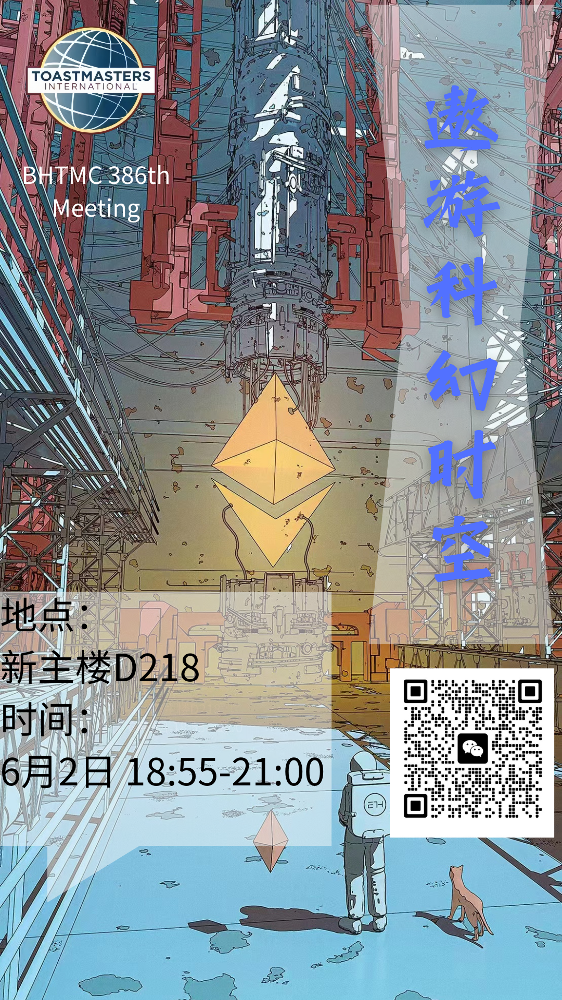
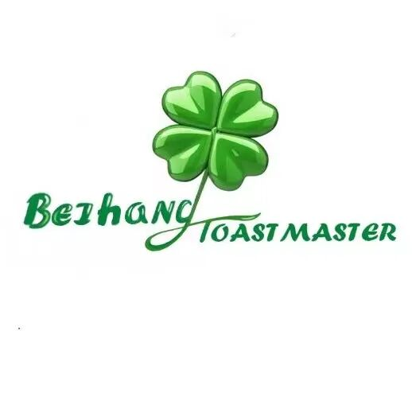

北航头马演讲社第386次中文会议
在这个快节奏的时代，人们对于未知的好奇心和想象力越来越强烈。而《三体》这部作品，不仅满足了人类对于宇宙、文明、科技等方面的好奇与幻想，更给人们带来了深刻的思考和启示。
凸显《三体》作品的三个核心关键词：宇宙、科技、人类。首先，宇宙是《三体》作品最为重要的背景之一。它不仅代表着人类对于未知世界的好奇、探索和勇气，更象征着深层次的哲学思考和人类的存在意义。
其次，科技是《三体》作品的另一个重要核心。科技不仅是人类进步的重要推动力，也是类类对于未知世界的一种探索方式。在《三体》中，科技的发展、应用和影响贯穿始终，而科技的重要性也在其中得到了充分的体现。
人类是《三体》作品的最终主题。在整个故事中，人类始终扮演着重要的角色，不仅是故事进展的主要推动力，也是故事中最为鲜明、感人的部分。
“跨越宇宙，探寻未知，拯救人类，三体即将引爆你的科幻梦想！”加入本周五晚上的头马会议吧，让我们一起遨游在科幻小说的奇幻世界中，共同以刘慈欣《三体》这部科幻巨作为主题来一次坐膝长谈吧
主题：遨游科幻时空
地点：新主楼D218北京航空航天大学(学院路校区)新主楼D座
时间：6月2日 18:55-21:00
圆桌会议主持人：Jason

Toastmasters International is a nonprofit educational organization that teaches public speaking and leadership skills through a worldwide network of clubs. Headquartered in Englewood, Colorado, the organization's membership is approximately 280,000 in more than 14,700 clubs in 144 countries. Since 1924, Toastmasters International has helped people from diverse backgrounds become more confident speakers, communicators, and leaders.
北航Toastmasters英语演讲俱乐部，致力于提升公众演讲能力与领导力。在这里，你会结识一群志同道合的朋友，如果你对英语、演讲、口语感兴趣，那就快来加入我们，一起进行思想碰撞吧
Mastermind:Jason
Poster:Daisy
Editor: Daisy
Review:Beihang Toastmasters